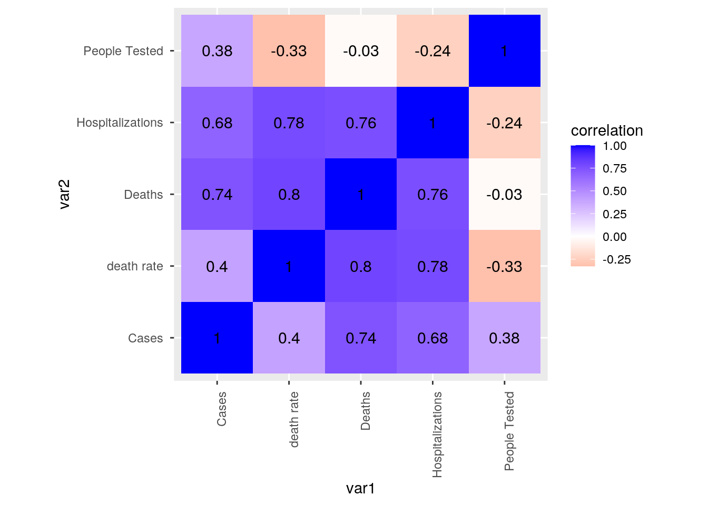
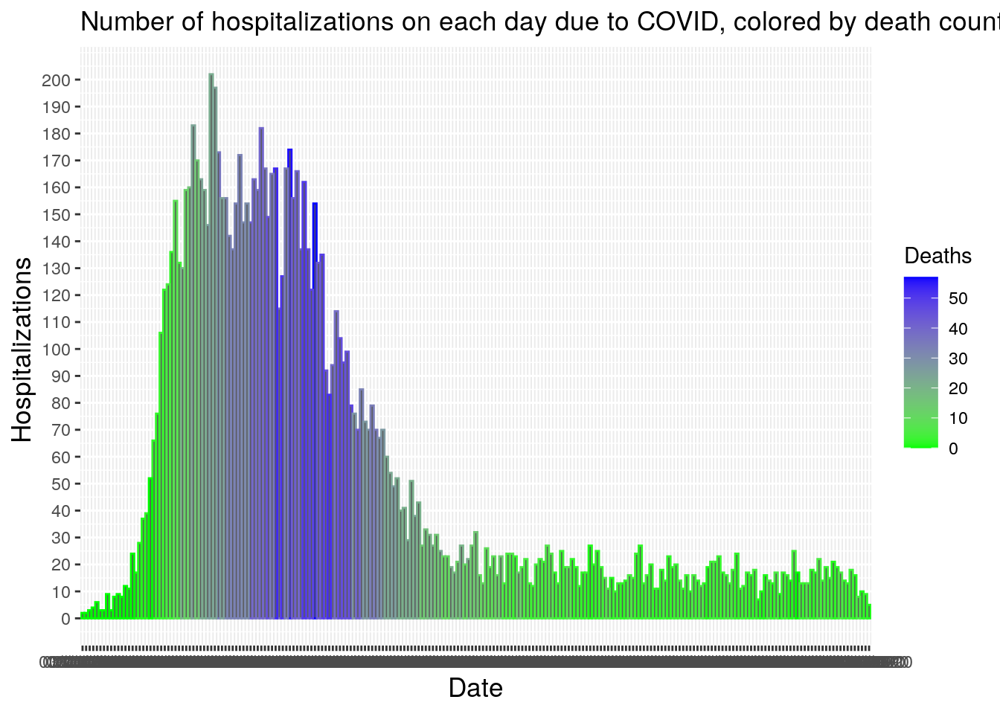
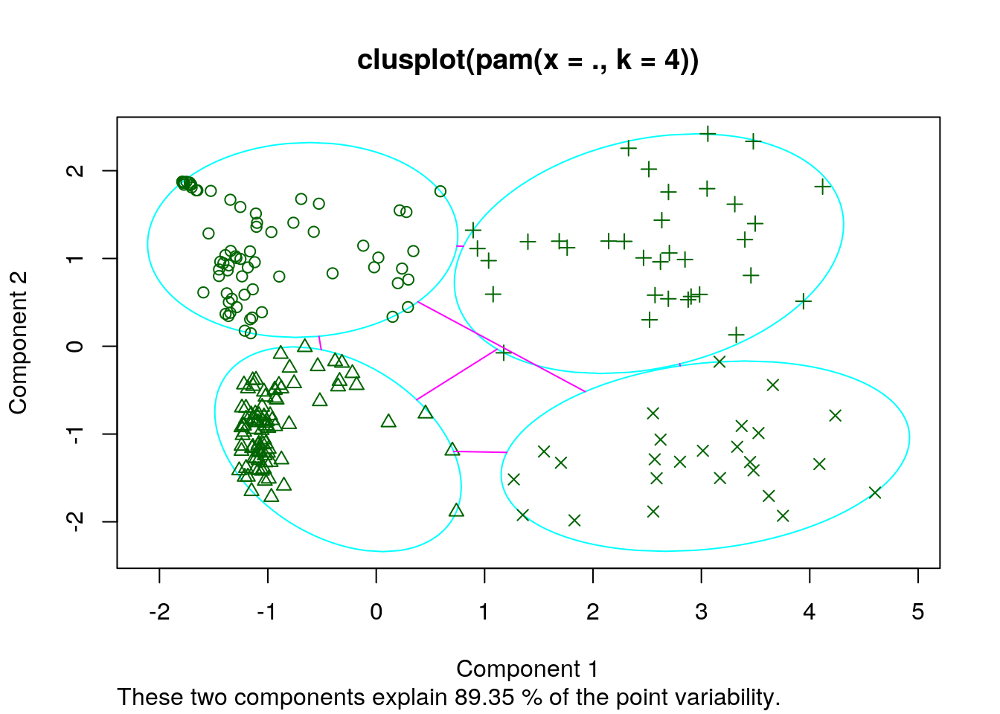

January 1, 0001
# The 1st dataset I chose documents the amount of people who
# were tested on each day in Chicago from 3/01/2020 to
# 10/07/2020 and which day of the week it was. The second
# dataset documents the number of cases, deaths, and
# hospitalizations on each day across the same date range.
# Both datasets were acquired by surveying medical providers
# for which of their clients were tested, hospitalized,
# diagnosed positive, and the resulting deaths. The datasets
# were interesting to me because of their relation to the
# current global pandemic.
library(tidyverse)
library(dplyr)
library(cluster)
COVID_19_Daily_Testing_By_Person <- read_csv("~/COVID-19_Daily_Testing_-_By_Person.csv")
rows_csv_accessType_DOWNLOAD <- read_csv("~/rows.csv?accessType=DOWNLOAD.csv")
daily_testing <- as.data.frame(COVID_19_Daily_Testing_By_Person)
covid_deaths <- as.data.frame(rows_csv_accessType_DOWNLOAD)
covid_deaths2 <- covid_deaths[1:4]
daily_testing2 <- daily_testing[1:3]
covid <- inner_join(daily_testing2, covid_deaths2, by = "Date")
# I joined my datasets by date, since each observation was
# taken on a different day. Since both datasets spanned the
# same date range, it did not matter which join I used. I
# chose inner join just to make sure only entries from both
# datasets were included.covid <- covid %>% pivot_longer(3:6, names_to = "var", values_to = "entries") %>%
separate(var, into = c("var", "total"), sep = "-") %>% select(-c("total")) %>%
pivot_wider(names_from = "var", values_from = "entries")
# ^ Removes word 'Total' from column names using
# pivot_longer, pivot_wider, and separate functions.covid <- covid %>% na.omit() #removes columns with nas(4 nas in hospitalizations, 1 na in Date/Day)
covid <- covid %>% mutate(`death rate ` = `Deaths `/`People Tested `)
covid_stats <- covid %>% summarise_if(is.numeric, list(mean = mean,
sd = sd, minumum = min, maximum = max, quantile = quantile,
n_entries = length))
covid_stats_day <- covid %>% group_by(Day) %>% summarise_if(is.numeric,
list(mean = mean, sd = sd, variance = var, minumum = min,
maximum = max, quantile = quantile, n_entries = length))
filtered_stats <- covid %>% filter(`Cases ` != 0) %>% summarise_if(is.numeric,
list(mean = mean, sd = sd, variance = var, minumum = min,
maximum = max, quantile = quantile, n_entries = length))
cases_over_time <- covid %>% select(Date, `Cases `) %>% arrange(Date)
covid_matrix <- covid %>% select_if(is.numeric) %>% cor(use = "pair")
# The means are 3292.661 for number tested, 378.7919 for
# cases, 13.51584 for deaths, 52.34842 for hospitalizations,
# and 0.005400436 for death rate. The standard deviations of
# each variable are 1824.602 for number tested, 283.3454 for
# cases, 15.32218 for deaths, 55.98954 for hospitalization,
# and 0.007195804 for death rate. When filtering out cases =
# 0, the minimums were 13 for people tested 1 for cases, 0
# for deaths, and 3 for Hospitalizations. The maximums were
# 6682 for people tested, 1467 for cases, 57 for deaths, 202
# for hospitalizations, and .034 for death rate. There were
# 31 entries on Thursday, Friday, Saturday, and 32 entries on
# all other days. At a glance, There appears to be a rise in
# the number of COVID cases over time. There were fewer
# people tested on Saturday and sunday, and therefore lower
# values for all numeric variables. According to the quantile
# descriptor, the data for cases, hospitalizations, and
# deaths for each day was skewed right, while the data for
# people tested was roughly centered. When removing entries
# where cases = 0, the means of all values were roughly
# equivalent, indicating that there were not many days that
# cases were not found. The strongest correlations were
# between Hospitalizations and death rate(0.78),
# Hospitalizations and deaths (0.76), and Deaths and
# cases(0.74).covid_matrix %>% as.data.frame %>% rownames_to_column("var1") %>% pivot_longer(-1,names_to="var2",values_to="correlation") %>% ggplot(aes(var1,var2,fill=correlation))+
geom_tile()+
scale_fill_gradient2(low="red",mid="white",high="blue")+ #makes colors!
geom_text(aes(label=round(correlation,2)),color = "black", size = 4)+ #overlay values
theme(axis.text.x = element_text(angle = 90, hjust=1))+ #flips x-axis labels
coord_fixed() 
covid %>% ggplot(aes(color = Day, x = `People Tested `, y = `Cases `))+
geom_point(stat="summary", fun=median)+
labs(title = "Number of Cases vs People Tested by Weekday")+
theme(axis.text.x = element_text(angle=45, hjust=1))+
scale_color_brewer(palette = "Set2")
# As the number of people tested increased, There appears to be a divergent pattern in
#the number of cases, creating two lines with different slopes. Most points fall along these two lines,
#with more points clustering around the line which indicates fewer cases per person tested. There seems
#to be 2 clusters of saturday and sunday in the line with the lower slope at around 2000 people tested.covid %>% ggplot(aes(x = Date, y = `Hospitalizations `, color = `Deaths `)) +
geom_bar(stat = "identity") + labs(title = "Number of hospitalizations on each day due to COVID, colored by death count") +
scale_y_continuous(breaks = seq(0, 200, 10)) + theme(axis.title.y = element_text(size = rel(1.2)),
axis.title.x = element_text(size = rel(1.2))) + scale_color_gradient(low = "green",
high = "blue")
# The Graph indicates that there was a sharp rise in the
# daily number of hospitalizations in the first quarter of
# dates or so, and then a decline for the second quarter. The
# second half of entries are at a stable value, which is
# higher than the starting value. The daily number of deaths
# follow a similar pattern over time, but their rise and
# decline occur about a 1 month later than th number of
# hospitalizations.clustering <- covid %>% select(`Hospitalizations `, `Deaths `,
`Cases `, `People Tested `, `death rate `) %>% scale %>%
as.data.frame #selects numeric variables from my dataset and centers them for clustering
set.seed(348)
sil_width <- vector()
for (i in 2:10) {
pam_fit <- pam(clustering, k = i)
sil_width[i] <- pam_fit$silinfo$avg.width
}
ggplot() + geom_line(aes(x = 1:10, y = sil_width)) + scale_x_continuous(name = "k",
breaks = 1:10) #helps me find the optimal number of clusters based on sharpest drop in silhouette width.
pam1 <- clustering %>% pam(k = 4) #runs cluster analysis
pamclust <- clustering %>% mutate(cluster = as.factor(pam1$cluster))
pamclust %>% group_by(cluster) %>% summarize_if(is.numeric, mean,
na.rm = T)## # A tibble: 4 x 6
## cluster `Hospitalizations ` `Deaths ` `Cases ` `People Tested ` `death rate `
## <fct> <dbl> <dbl> <dbl> <dbl> <dbl>
## 1 1 -0.469 -0.569 -0.880 -0.990 -0.385
## 2 2 -0.573 -0.479 -0.0781 0.930 -0.567
## 3 3 1.56 1.11 0.380 -0.853 1.83
## 4 4 1.30 1.84 2.23 0.509 0.671pamclust %>% slice(pam1$id.med)## Hospitalizations Deaths Cases People Tested death rate cluster
## 1 -0.6313397 -0.6863149 -0.90981494 -0.8904193 -0.5005521 1
## 2 -0.5956187 -0.6210500 0.04308574 0.8617439 -0.6362370 2
## 3 1.8512671 1.2063667 0.67835286 -0.8410935 1.7791017 3
## 4 1.4226156 1.9242804 2.10417461 0.4764543 0.6852793 4library(GGally)
ggpairs(pamclust, columns = 1:5, aes(color = cluster)) #visualise clusters for 5 variables.
plot(pam1, which = 1) #find goodness of fit
# The clustering method has a high correlation when Deaths
# and cases(cor = .744), death rate and hospitalizations (cor
# = 0.777) or deaths and hospitalizations(cor = 0.762) are
# the two paired variables, and so graphs between these pairs
# show the least distinguishable clusters. The clusters do
# not appear to correspond to Days of the week, our
# categorical variable. Clusters explain 89.35% of point
# variability in my dataset, making this clustering method a
# marginally strong fit.